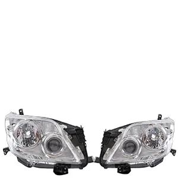
Catalog note: Product names and part numbers are based on the supplied Toyota catalog. Please confirm part number and vehicle fitment before ordering.
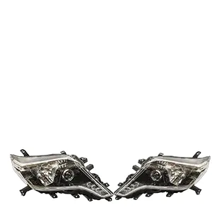
Headlights
- Fitment
- Toyota Land Cruiser LC150
- Part No.
- 81110-0G050/81150-0G050白
81110-0G060/81150-0G060黑
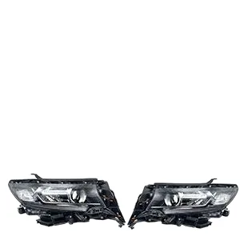
Headlights
- Fitment
- Toyota Land Cruiser LC150
- Part No.
- 81110-0G090/81150-0G090
81110-0G100/81150-0G100
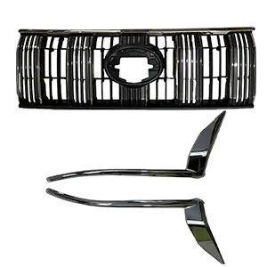
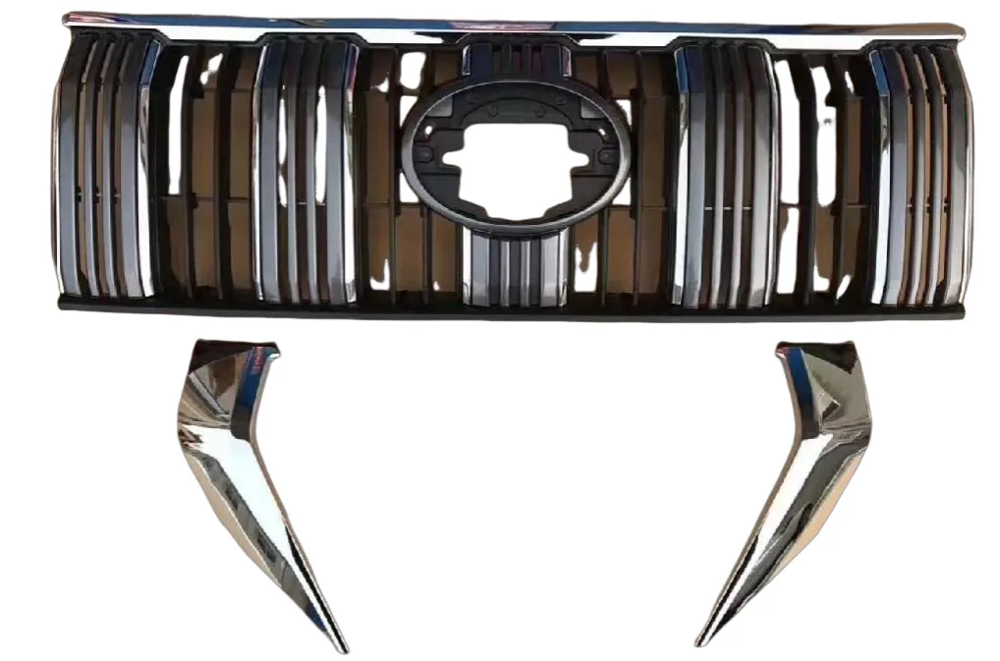
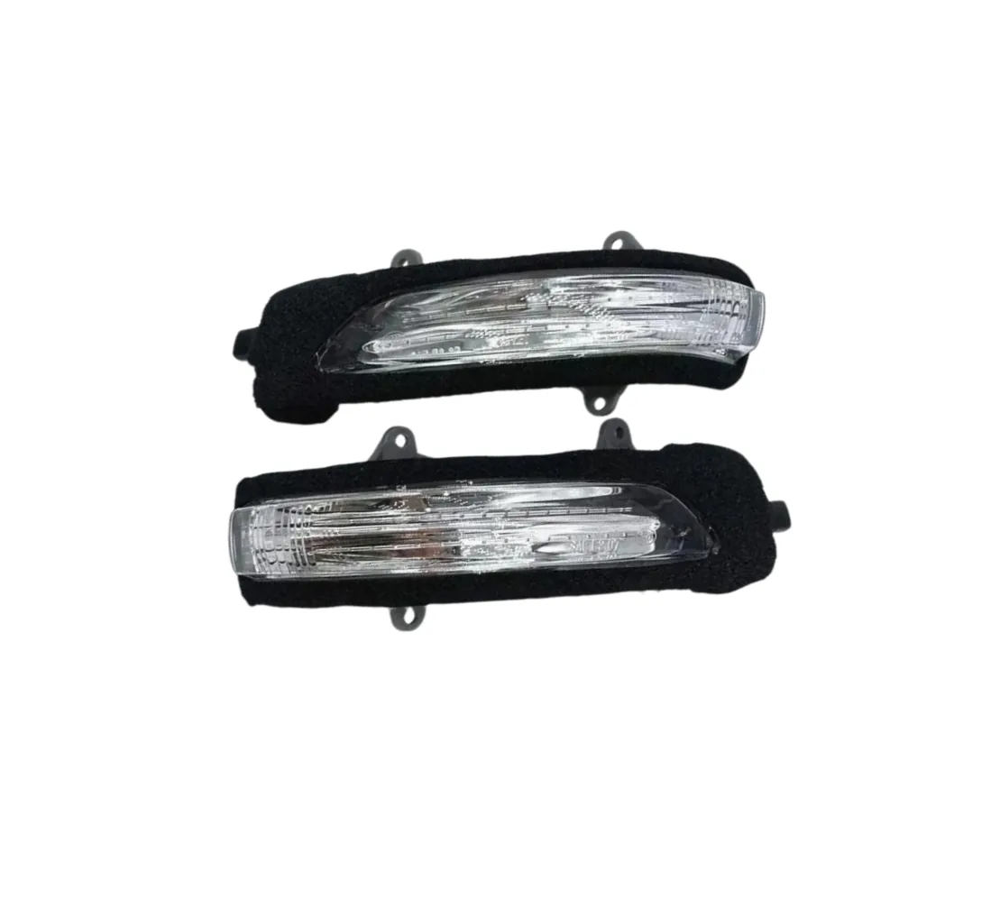
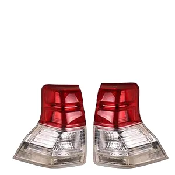
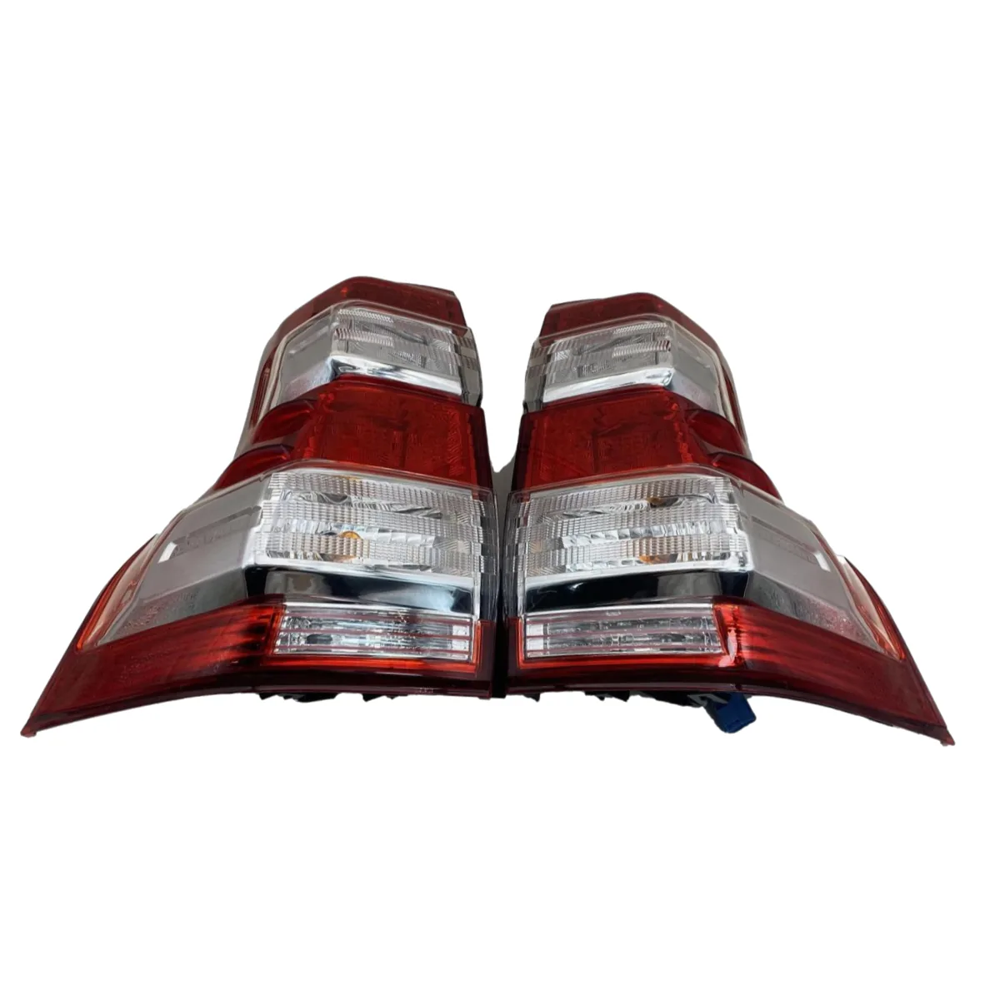
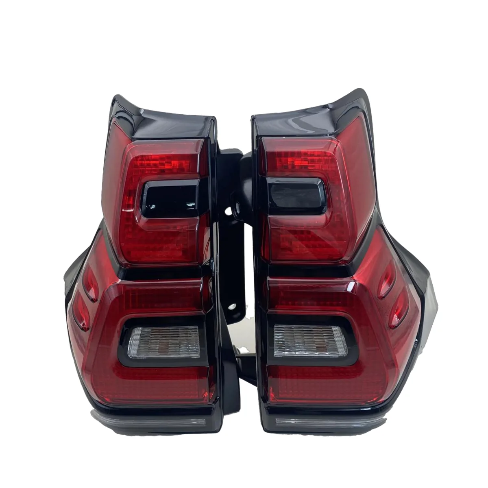
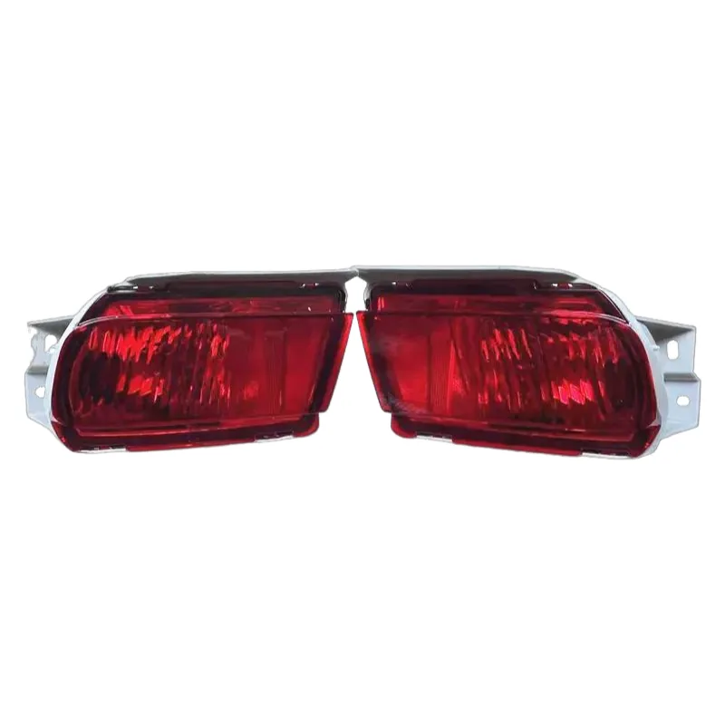

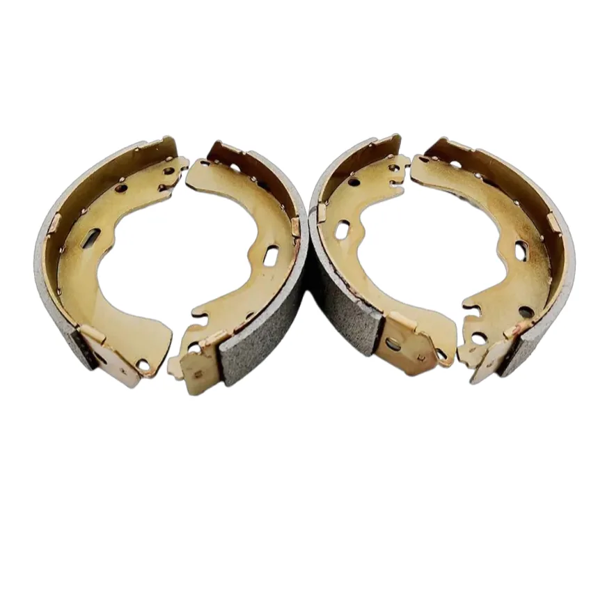
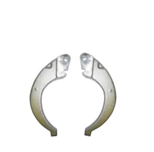

Front and rear brake pads
- Fitment
- Toyota Land Cruiser LC150
- Part No.
- 04465-35290
04466-60090

Front rear brake cylinde
- Fitment
- Toyota Land Cruiser LC150
- Part No.
- 47730-60300/47750-60300
47730-34030/47750-34030
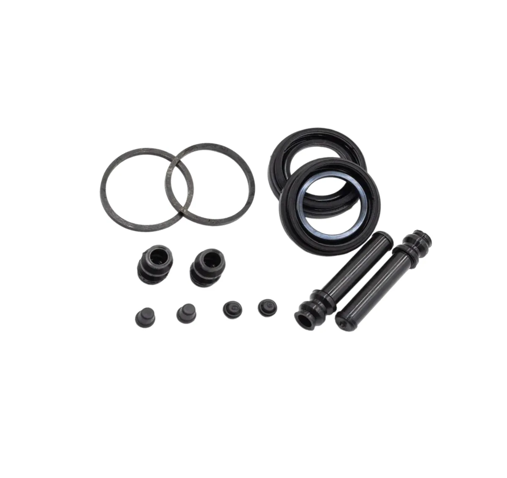
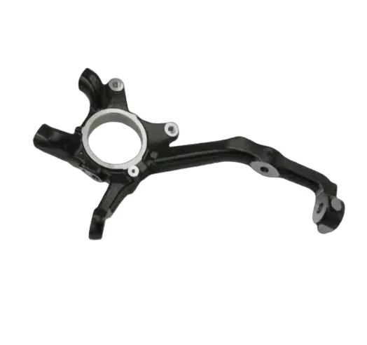
Front steering knuckle
- Fitment
- Toyota Land Cruiser LC150
- Part No.
- 43211-60240/43212-60240(2016)
43211-60200/43212-60200(2010
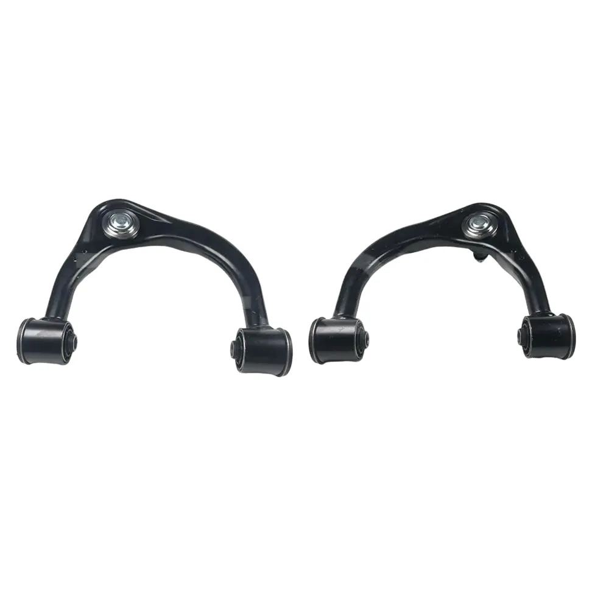
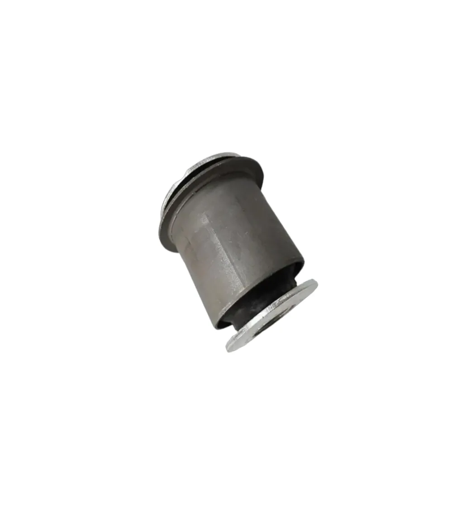
Hanging rubber sleeve
- Fitment
- Toyota Land Cruiser LC150
- Part No.
- 48632-60020
48654-60050
48655-60050
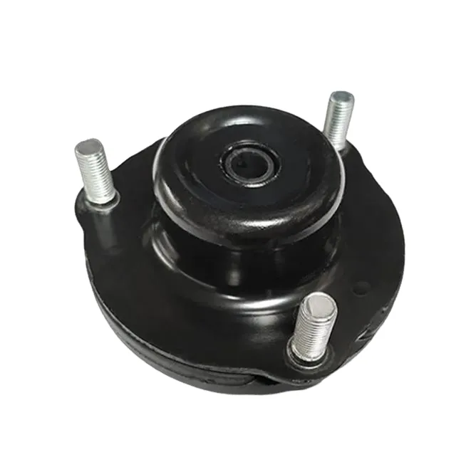
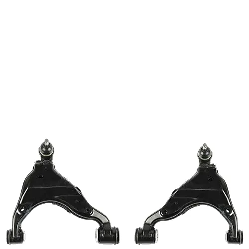
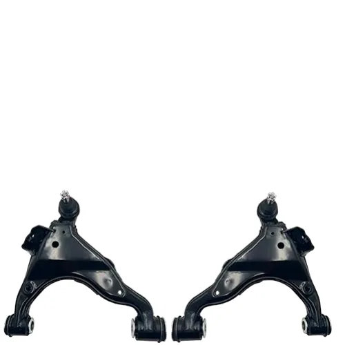

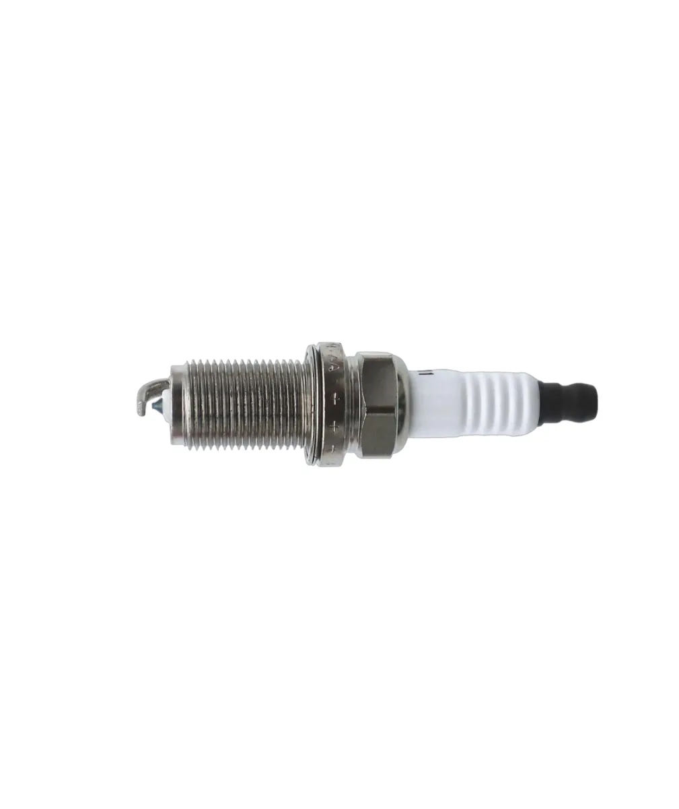
NO IMAGE
No matching parts found.